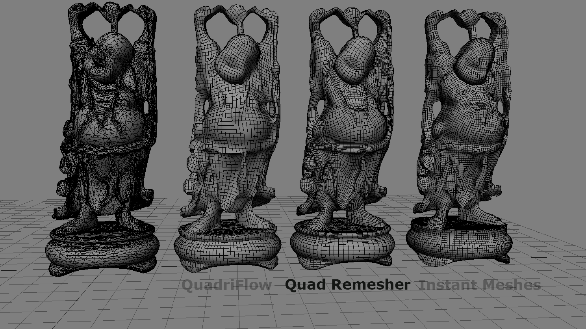

Quad Remesher
Last update: 01.12.2019
Description: this is Softimage version of the plugin Quad Remesher
Download: QuadRemesher addon
How to install: install as usual addon for Softimage. After installation in the Plugin Manager the xremesh.dll will be indicated as invalid file. All correct, this dll-file does not needed for the addon.
How it works: this addon is a bridge between Softimage and standalone application xremesh.exe located in the /Application/Plugins/QuadRemesherEngine folder inside installed addon directory. The addon packed with cracked version of this application, so, it works without any license. If you have some moral problems when using some illegal software, buy the application in this site for Blender (for example), and replace it in the addon folder.
Application xremesh.exe get 3d-model in the fbx-format and return result also in the fbx-format. During remeshing process, it creates the file progress.txt and communicate with other applications through this file. To start remesh process, select one polygonmesh object and click Create - Poly. Mesh - Quad Remesher - Quad Remesher. The modal window with parameters will appear.
Set parameters and click Ok. After that the selected object will be export as *.fbx file and special timer will starts. This timer check the file process.txt and after the remeshing is done, then resulting *.fbx file will be imported back to the Softimage. All fbx-files stores in /Modles/QuadRemesher Store/ folder inside active project directory.
You can manually stop the timer, if the remeshing process crashed. Simply click Creat - Poly. Mesh - Quad Remesher - Stop Update Timer. Also you should stop the xremesh application in the task manager. Sometimes, after remeshing is finish, the Softimage report that there is no file to import. It is because this file is not created, when the timer check the finish of the remeshing process. Simply import it manualy, or restart remeshing process.
Comparison: Quad Remesher produce the most accurate mesh compared to Instant Meshes and QuadriFlow.
How to use Vertex Color: it's possible to control the relative density of the mesh by using vertex colors. The neutral color is white (rbg = (1.0, 1.0, 1.0)). The red color (rgb = (1.0, 0.0, 0.0)) indicates the x4 density of polygons. The cyan color (rgb = (0.0, 1.0, 1.0)) indicates x0.25 density of polygons. Middle values indicates some middle density. For example, color rgb = (1.0, 0.5, 0.5) indicates x2 density, and so on. In the image bellow at the left the plane with colored vertices, at the right the plane after remeshing.